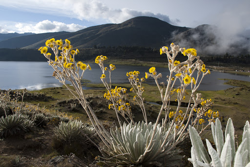

Sistema Mukumbarí
📍 Sierra Nevada • 4,765 msnm

Donde los picos nevados rompen el cielo tropical y la historia colonial se escribe entre calles de piedra.
Explora la geografía mística de Mérida, desde valles coloniales pacíficos hasta estaciones mecánicas en el corazón de las nubes.
📍 Sierra Nevada • 4,765 msnm

📍 Páramo de Mucuchíes

📍 Ruta Colonial Transandina